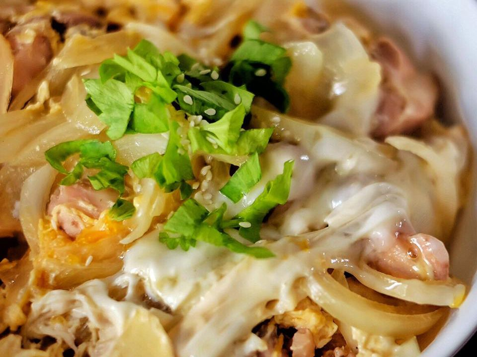

Oyakodon

Japanese dish - chicken and egg rice bowl
Oyakodon is a delicious traditional Japanese meal consisting of
chicken sautéed and then cooked in a Japanese broth,
and then finished with egg and served over rice.
It's really easy, filling, and delicious.
Prep Time: 10 mins
Cook Time: 30 mins
Total Time: 40 mins
688 calories; total fat 15g, saturated fat 4g, cholesterol
208mg, sodium 1226mg, total carbohydrate 98g, dietary
fiber 2g, total sugars 17g, protein 35g, vitamin c 4mg,
calcium 80mg, iron 3mg, potassium 510mg
Ingredients
- 1 tablespoon olive oil
- 4 skinless, boneless chicken thighs, cut into small pieces
- 1 onion, cut in half and sliced
- 2 cups dashi stock
- ¼ cup soy sauce
- 3 tablespoons mirin (Japanese rice wine)
- 3 tablespoons brown sugar
- 4 large eggs
- 4 cups hot cooked white rice
Directions
- Heat oil in a large skillet over medium heat. Add chicken and cook until beginning to brown, about 5 minutes. Add onion; cook and stir until onion is translucent, about 5 minutes.
- Pour in stock, then whisk in soy sauce, mirin, and brown sugar; stir until sugar dissolves. Bring to a boil, then lower heat and simmer until slightly reduced, about 10 minutes.
- Whisk eggs in a bowl until well-beaten, then pour into the hot stock mixture. Cover the skillet, reduce the heat, and steam until egg is cooked, about 5 minutes. Remove from the heat.
- Divide rice among 4 deep soup bowls and top with equal amounts of the soup mixture.